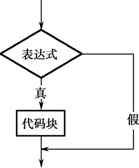
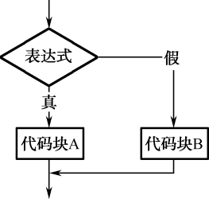
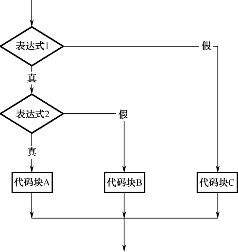

3.1 if语句
本章简介中提到的问题，其实利用现有的知识，在不使用if语句的情况下也能解决，代码如下。
import java.util.Scanner;
class TestIf1{
public static void main(String[] args) {
int JavaScore = -1; //Java考试成绩
Scanner input = new Scanner(System.in);
System.out.print("请输入王云同学Java考试成绩：");
JavaScore = input.nextInt(); //从控制台获取Java考试成绩
//使用(表达式1)?(表达式2):(表达式3)这个三目运算符进行判断输出
System.out.println(JavaScore>=60?("恭喜你，考试合格！"):("很难过地通知你，考试不及格，需要补考！"));
}
}
这样的写法可以解决这个问题，但不够灵活。通过if语句，可以更加灵活地编写条件判断程序。
3.1.1 if语句的语法
if语句有以下3种语法形式。
第一种形式为基本形式，其语法形式如下。
If(表达式){
代码块
}
其语义是：如果表达式的值为true，则执行其后的代码块，否则不执行该代码块。其执行过程如图3.1所示。
需要强调的是，在if语句中，表达式的类型必须是布尔类型，例如可以写成a == 3，但不要误写成a = 3（赋值语句）。
if语句的第二种语法形式如下。
If(表达式){
代码块A
}else{
代码块B
}
其语义是：如果表达式的值为true，则执行其后的代码块A，否则执行代码块B。其执行过程如图3.2所示。

图3.1 if语句语法形式一

图3.2 if语句语法形式二
将前面使用三目运算符完成的程序换成使用if语句，代码如下所示。
import java.util.Scanner;
class TestIf2{
public static void main(String[] args) {
int JavaScore = -1; //Java考试成绩
Scanner input = new Scanner(System.in);
System.out.print("请输入王云同学Java考试成绩：");
JavaScore = input.nextInt(); //从控制台获取Java考试成绩
//使用if...else...实现
if(JavaScore >= 60){
System.out.println("恭喜你，考试合格！");
}else{
System.out.println("很难过地通知你，考试不及格，需要补考！");
}
}
}
假设上面的程序需求发生了变化，更改为：如果王云同学的Java考试成绩和Web考试成绩都大于等于60分，则输出“恭喜你，获得Java初级工程师认证！”，否则输出“你有考试不及格，需要补考！”，具体的代码如下所示。
import java.util.Scanner;
class TestIf3{
public static void main(String[] args) {
int JavaScore = -1; //Java考试成绩
int WebScore = -1; //Web考试成绩
Scanner input = new Scanner(System.in);
System.out.print("请输入王云同学Java考试成绩：");
JavaScore = input.nextInt(); //从控制台获取Java考试成绩
System.out.print("请输入王云同学Web考试成绩：");
WebScore = input.nextInt(); //从控制台获取Web考试成绩
//使用if...else...实现
if(JavaScore >= 60 && WebScore >= 60)
{
System.out.println("恭喜你，获得Java初级工程师认证！");
}else{
System.out.println("你有考试不及格，需要补考！");
}
}
}
if语句的第三种语法形式如下。
if(表达式1){
代码块A
}else if(表达式2){
代码块B
}else if(表达式3){
代码块C
…
}else{
代码块X
}
其语义是：依次判断表达式的值，当出现某个表达式的值为true时，则执行其对应的代码块，然后跳到整个if语句之后继续执行程序。如果所有的表达式均为flase，则执行代码块X，然后继续执行后续程序，其执行过程如图3.3所示。
还是前面的例子，需求更改为：王云同学的Java考试成绩为x，则按以下要求输出结果。
x ≥ 85，则输出“恭喜你，成绩优秀！”。
70 ≤ x < 85，则输出“恭喜你，成绩良好！”。
60 ≤ x < 70，则输出“恭喜你，成绩合格！”。
x < 60，则输出“很抱歉，成绩不合格！”。

图3.3 if语句语法形式三
具体代码如下所示。
import java.util.Scanner;
class TestIf4
{
public static void main(String[] args) {
int JavaScore = -1; //Java考试成绩
Scanner input = new Scanner(System.in);
System.out.print("请输入王云同学Java考试成绩：");
JavaScore = input.nextInt(); //从控制台获取Java考试成绩
//使用if...else if...实现
if(JavaScore >= 85)
{
System.out.println("恭喜你，成绩优秀！");
}else if(JavaScore >=70){
System.out.println("恭喜你，成绩良好！");
}else if(JavaScore >=60){
System.out.println("恭喜你，成绩合格！");
}else{
System.out.println("很抱歉，成绩不合格！");
}
}
}
注意，程序中判断表达式的前后顺序务必要有一定的规则，要么从大到小，要么从小到大，否则会出现错误。还是刚才的案例，如果把JavaScore >=70表达式及其之后的语句和JavaScore >=60表达式及其之后的语句换个位置，编译运行，当用户输入75的时候，就会输出“恭喜你，成绩合格！”，软件出现缺陷。
3.1.2 嵌套if语句
有这样的需求：某小学需要从该校五、六年级学生中挑选一部分学生参加市数学竞赛，现对该校所有五、六年级学生进行了一次摸底考试，根据考试成绩，大于等于80分的可以参加数学竞赛，之后再根据年级分别进入五年级组和六年级组。
首先要判断学生考试成绩是否大于等于80分，在大于等于80分的基础上再判断是进入五年级组还是进入六年级组。所以使用嵌套的if语句，语法形式如下，具体的流程图如图3.4所示。
If(表达式1){
If(表达式2){
代码块A
}else{
代码块B
}
}else{
代码块C
}

图3.4 嵌套的if语句
具体程序代码如下所示。
import java.util.Scanner;
class TestIf5
{
public static void main(String[] args)
{
int score = -1; //数学摸底考试成绩
int grade = 5; //学生年级数
Scanner input = new Scanner(System.in);
System.out.print("请输入数学摸底考试成绩：");
score = input.nextInt(); //从控制台获取数学摸底考试成绩
//使用嵌套的if语句实现
if(score >= 80)
{
System.out.print("请输入所属年级（只能输入“5”或“6”）：");
grade = input.nextInt(); //从控制台获取所属年级
if (grade == 5)
{
System.out.println("你将参加市五年级组数学竞赛！");
}else{
System.out.println("你将参加市六年级组数学竞赛！");
}
}else{
System.out.println("抱歉，不能参加市数学竞赛！");
}
}
}